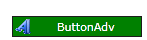

The Visual Styles can also be defined at application level. Merging the appropriate ResourceDictionary on application resources will cause all the controls to pick up the particular style.
The following code snippet explains how to override the Syncfusion Blend Style for the ButtonAdv control at the application level.
|
[XAML]
<Application.Resources> <ResourceDictionary> <ResourceDictionary.MergedDictionaries> <ResourceDictionary Source="/Syncfusion.Theming.Blend;component/ButtonAdv.xaml"/> </ResourceDictionary.MergedDictionaries> <Style TargetType="syncfusion:ButtonAdv" BasedOn="{StaticResource BlendButtonAdvStyle}"> <Setter Property="Background" Value="Green"/> <Setter Property="Foreground" Value="White"/> </Style> </ResourceDictionary> </Application.Resources>
|
The output is as shown below.

Figure 1165: ButtonAdv Control